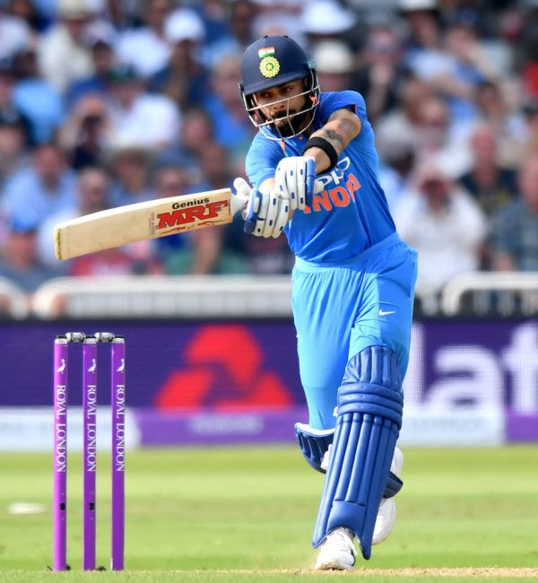

The aim of this website is to provide people with a better understanding of the game of cricket. This includes the rules, the types of matches that are played and the roles of certain players!
If there are any questions regarding the contents of this page, please feel free to contact us
Contact usCricket is an 11-person team sport eloquently labelled as "The Gentleman's Game".
It involves a bowler bowling a leather cricket ball to an opposing team batsman who, in turn, attempts to hit the ball
to score a "run" while the rest of the bowler's team tries to prevent this. The bowler bowls 6 legitimate balls in a row before the next bowler gets a chance
and it is called an "over". Matches are then seperated into either 20 overs per team, 50 overs per team or even a 5 day test matches with up to 90 overs per day!
Cricket is admittedly a sport with many rules, as the block of writing before the image above may have indicated.
However, once broken down and understood, these rules contribute to an enthralling and fascinating sport!
The best place to start when trying to understand cricket is by learning the way a batsman can get out.
These ways of getting out, or "modes of dismissal", are all indicated below. Numbers 1 - 5 are the most common ways a wicket is taken (batsman gets out)
The rest of the dismissal types are rare, but they are legitimate ways of getting out and have do occur if the batsman in rare instances
| Number | Dismissal Type | Description |
|---|---|---|
| 1 | Bowled | Ball bowled and hits the batsman's wicket |
| 2 | Caught | Batsman hits the ball and gets caught without a bounce |
| 3 | LBW | Ball hits a part of the batsman other than the bat or gloves inline with the stumps |
| 4 | Stumped | Wicketkeeper removes the bails while the batsman is outside the crease |
| 5 | Run Out | Bails are removed while the batsman is outside the crease while attempting to score a run |
| 6 | Timed Out | Batsman takes too long to reach the crease and be ready to face the bowler |
| 7 | Hit Wicket | Batsman hits the stumps causing the bails to be removed |
| 8 | Obstructing the field | Batsman disrupts the field of play in a manner to prevent the bowling team from taking a wicket |
| 9 | Retired | The batsman decides to leave the field of play without permission from the umpire for a reason other than injury |
| 10 | Hit the ball twice | The batsman deliberately hits the ball for a second time after the ball is bowled for a reason other than to stop the ball from dropping onto or rolling into the stumps |
| 11 | Handling the ball | Although now considered Obstructing the field, it was once considered a seperate dismissal if the batsman purposefully touched or picked up the ball after playing it |
Now we understand that this may be a little confusing! But this can be further explained by splitting up the two different facets of the game, namely Batting and Bowling.
As mentioned, each team will take turns batting and bowling, with the order of which being chosen by a coin toss at the beginning of the match.
Then, for example if team A wins the toss and elects to Bat, 2 batsman will go to bat and the Bowling team will attempt to get each batsman out. The batting team will then bat
until either 10 wickets are taken (i.e. only one batsman left) or the total amount of overs are up.
Finally, once these both teams have batted and bowled, the team that has scored the most runs wins! Now, if you are still confused, we have seperated sections of Battingand Bowling
into seperate pages for further explanation. Please feel free to visit these pages if you wish to learn mor about this beautiful game!
"No cricket team in the world depends on one or two players. The team always plays to win"
